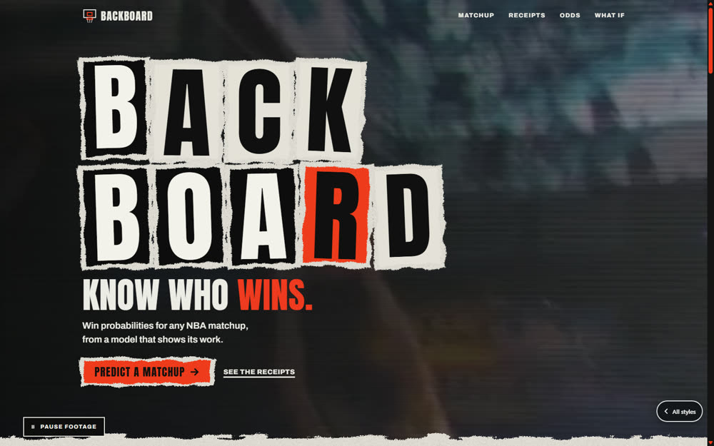

Combined
Home, Matchups, Teams, Season, Players and Ask. The assistant and the build-your-own what-if go live when the engine is running; everything else works from the data snapshot.
Open the siteSix visual worlds for the Backboard landing page, each built twice: once with the Taste skill and once with the Impeccable skill. Every page shows the same real model output, so only the style changes.
Real numbers. Every probability, projected score, title-odds figure and what-if on these pages comes from the production model. Data runs through 2026-06-13, with team strength frozen on 2026-04-12.
The default matchup is the real Finals. The model gave the Spurs 72.1% and the Knicks won it. Each page keeps that miss on screen instead of hiding it.
Every page is a full landing page. A working matchup picker for all 870 pairings, why-it-leans breakdown, the model's receipts, title odds against what happened, and a what-if with its own confidence grade.
The xerox zine as the whole Backboard web UI: six pages behind a Limelight nav bar. Matchups, teams, season and playoffs, player impact and what-ifs, and the assistant, all on real model output.
Photocopy, tape, cut-out letters and typewriter captions. Scrapbook grit instead of the blacktop look.
The graphics package you watch the game through: scorebug, lower-third, wipes and a data crawl.
The floor itself: maple, painted paint, regulation lines. The court is the layout.
Cardboard and foil. The card is the interface, and the back of the card holds the reasoning.
Seven-segment digits with the unlit segments drawn, dot-matrix labels, amber and red LEDs on matte black.
Modernist sports poster: one grotesk, a strict grid, and the two teams' own colors as flat fields.